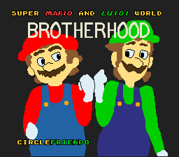
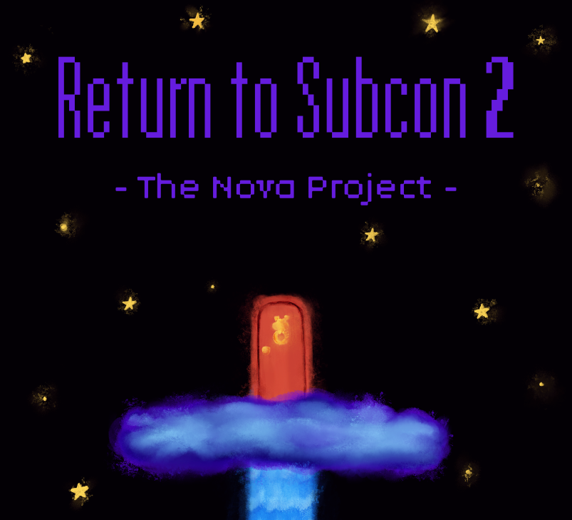
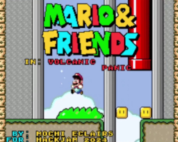
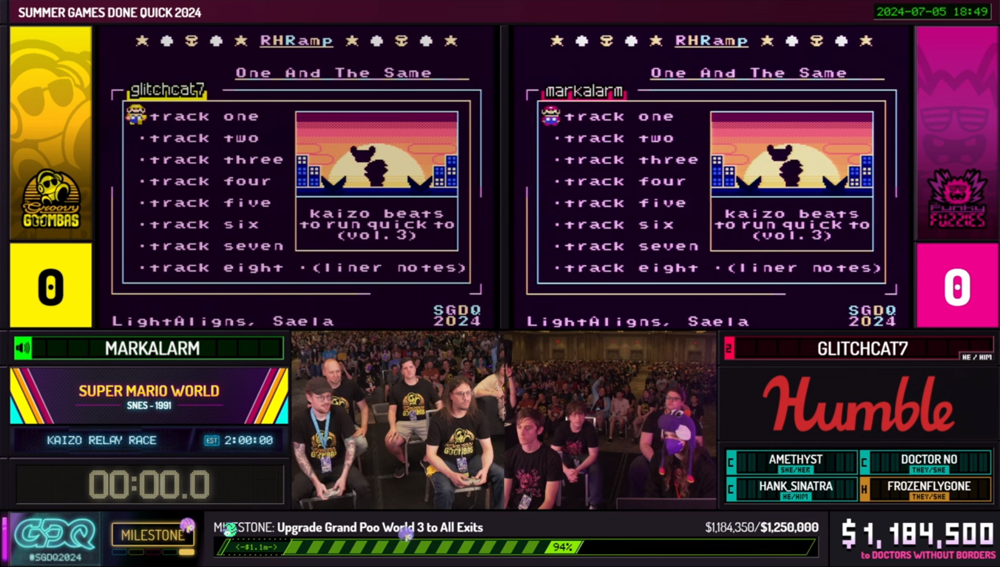
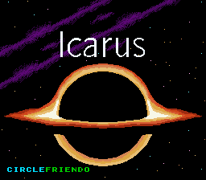
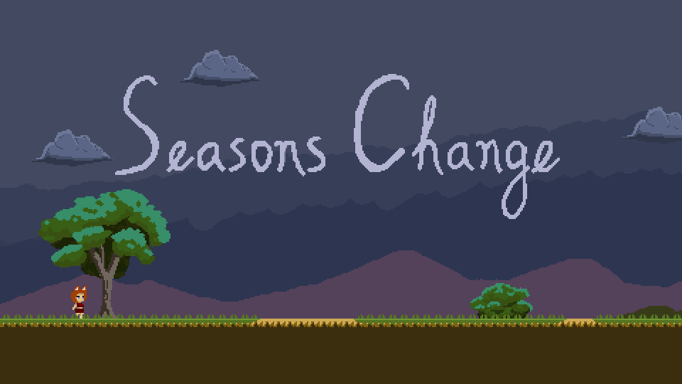
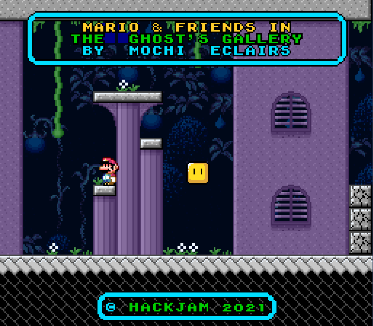
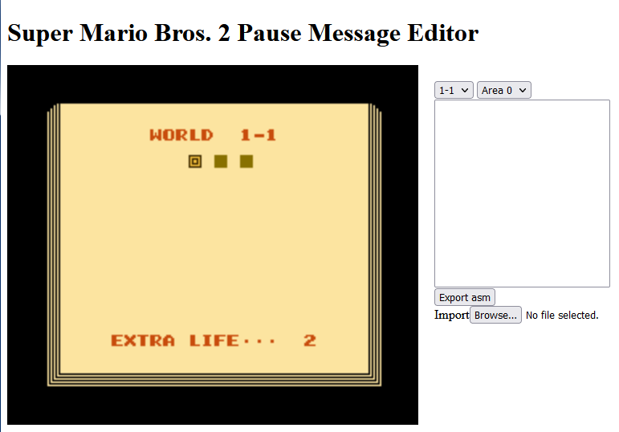
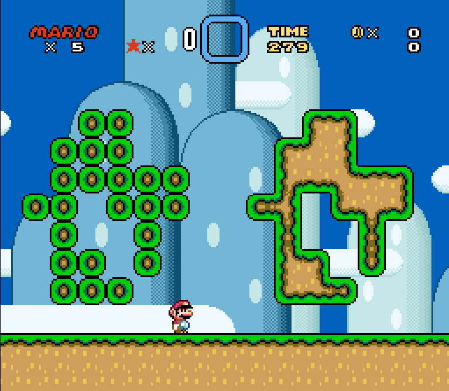

Games:
Super Mario and Luigi World: Brotherhood

Super Mario and Luigi World: Brotherhood is a two-player Super Mario World mod. Brotherhood was featured at SGDQ 2026.
Super Mario and Luigi World: BrotherhoodBrotherhood Race on YouTube
Return to Subcon 2: The Nova Project

Return to Subcon 2: The Nova Project is a Super Mario Bros. 2 mod created by GlitchCat7. It features the first ever custom boss in a Super Mario Bros. 2 mod.
Return to Subcon 2: The Nova ProjectMario & Friends in: Volcanic Panic

Mario & Friends in: Volcanic Panic is a Super Mario World mod created for SMW Central's HackJam 2024 game jam. It is the sequel to our earlier game, Mario & Friends in: The Ghost's Gallery.
Mario & Friends in: Volcanic PanicYouTube Playlist
SGDQ 2024 SMW Kaizo Relay Race

Games Done Quick is a series of charity video game marathons. The Kaizo Relay Race is a Super Mario World mod featuring 8 levels designed specifically to be raced by two teams of four players.
SMW Relay on YouTubeIcarus

Icarus is a Super Mario World mod featuring precision platforming.
IcarusYouTube Playlist
Seasons Change

Seasons Change is a short demo I made to learn the Godot Engine. It's a simple platforming game about exploring a landscape while altering the seasons.
Seasons Change DemoMario & Friends in: The Ghost's Gallery

Mario & Friends in: The Ghost's Gallery is a Super Mario World mod created for SMW Central's HackJam game jam. I worked with sio_kedelic and HamOfJustice during the seven-week event.
Mario & Friends in: The Ghost's GalleryYouTube Playlist
Tools:
Super Mario World Map16 Text Editor
This Map16 Text Editor allows a mod author to type in text to add to their levels. Without this tool, letters have to be placed manually one by one.
SMW Map16 Text EditorSuper Mario Bros. 2 Pause Message Editor

This Pause Message Editor allows a mod author to add messages to the pause screens in Super Mario Bros. 2. This allows the author to include useful hints and tips catered to individual areas of the game.
SMB2 Pause Message EditorSuper Mario World Autotile

This autotile utility will automatically merge tiles with the correct edges. It saves the author a lot of tedious placing of individual tiles.
SMW AutotileResources:
Super Mario World Resources
Custom resources for Super Mario World mods I have created include:
- Music Arrangement
- Sprites
- Status Bar
Super Mario Bros. 2 Resources
Custom patches for Super Mario Bros. 2 mods I have created include:
- Pause Message Editor
- Title Card Editor
- Cap Max Health
- Continue From Level
- Disable Sky Flashing